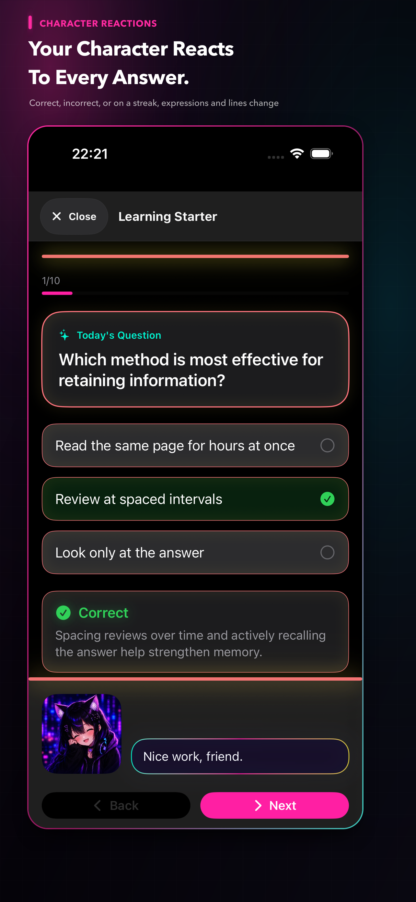
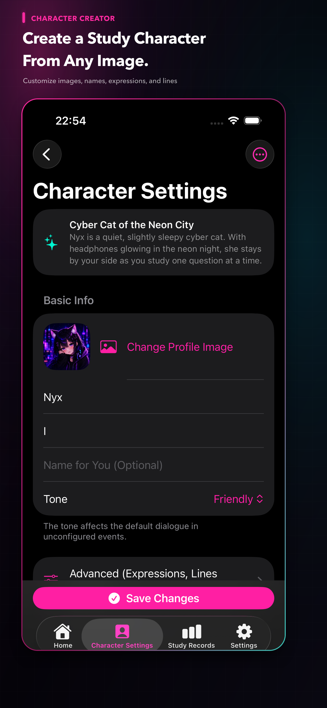
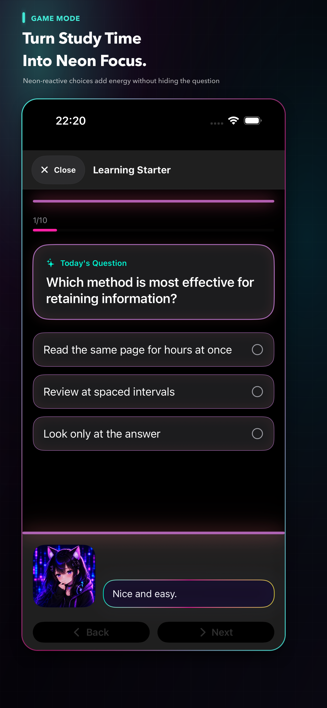
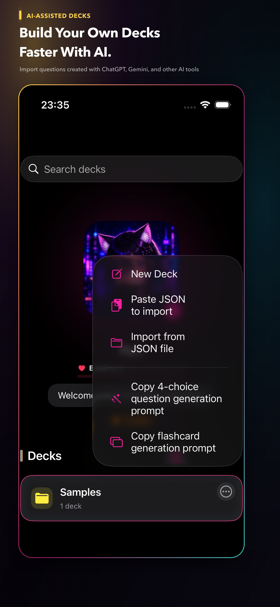
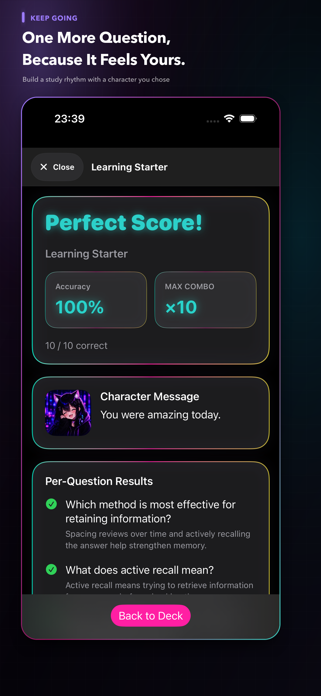
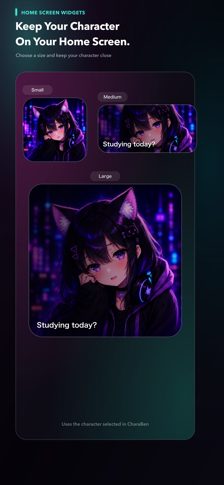

Expressions and lines change with every answer
Your character reacts to correct answers, mistakes, and winning streaks—adding a little feedback to every solo study session.
Your character. Your study partner.
CharaBen is an iPhone study app where you can learn with a character—or your “oshi”—created with your favorite images, name, and lines, using question sets all your own.
Made for iPhone · Free to start

Why CharaBen
Your favorite character and vivid effects turn “I should study” into “just one question.”
Your character reacts to correct answers, mistakes, and winning streaks—adding a little feedback to every solo study session.
Customize images, expressions, a name, and lines to make the character yours. Or start immediately with a preset character.
Set effects to “Flashy” and neon color lights up questions, choices, and results for a more immersive experience.
Import questions made with ChatGPT or another service in one batch. CharaBen does not connect directly to an AI service.
Learning history and review progress stay on your device. Home Screen widgets keep your character close between sessions.
Inside the app





Private by design
Question sets, learning history, character images, and audio are managed locally. There is no account registration or proprietary analytics SDK.
Support
Questions and issue reports are welcome by email. Including your device model, iOS version, app version, and what happened will help us investigate.
Privacy policy
Last updated: August 9, 2026 · This translation is provided for reference; the Japanese version is the original policy.
CharaBen stores question sets, questions and answers, learning records, review status, folder, archive and pin settings, character settings, names, images, expression images, audio, display and notification settings, onboarding status, and information needed for backup and restore locally on your device.
This information is used for learning, display, review, backup, and restore features. It is not collected by or sent to servers operated by the Developer. CharaBen does not require account registration or use its own analytics SDK. If you choose external storage for a backup, that service’s policy applies.
CharaBen displays banner ads through Google LLC’s Google Mobile Ads SDK (AdMob) to support operating costs. Advertising providers may use IP address and approximate location, device or SDK identifiers, technical information, ad interaction information, and diagnostic and performance information for ad delivery, fraud prevention, measurement, and quality improvement.
At launch, CharaBen does not request App Tracking Transparency permission and does not track users for IDFA-based tracking advertising. See the Google Privacy Policy and Google Mobile Ads SDK data disclosure for details.
An optional non-consumable in-app purchase permanently removes ads. Apple processes purchases and restores; the Developer does not receive payment card information.
If you enable study reminders, CharaBen uses local notifications on your device. Notification content and settings are not sent to the Developer’s servers.
Files selected as character images, expression images, or audio are stored on your device and are not sent to the Developer. Imported question JSON and backup files are also processed on your device.
CharaBen can copy a prompt for creating question JSON with an external AI service such as ChatGPT, but it does not connect directly to an external AI service. Information entered there is subject to that service’s policy.
Except for the advertising provider handling described above, the Developer does not provide your learning content, character settings, images, audio, or backup contents to third parties.
Where parental consent is required, CharaBen is intended to be used with the involvement of a parent or guardian in accordance with applicable law. Because the app includes advertising, please review the App Store age rating and device content restrictions.
Contact charaben.support@gmail.com with policy questions. The Developer may update this policy in response to changes in law, advertising SDK specifications, or app features. Material changes will be announced on this page or in the app.